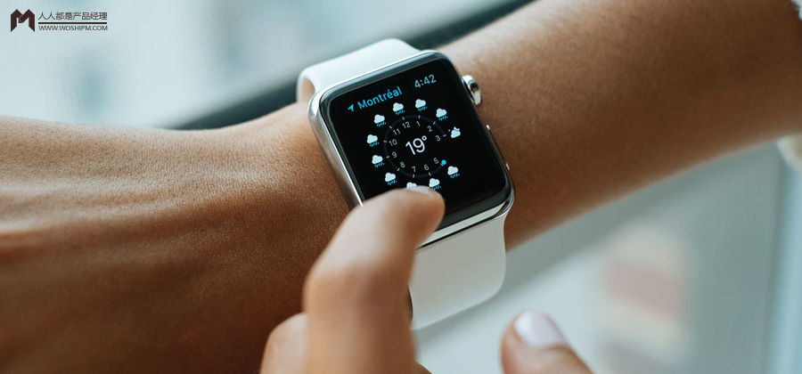
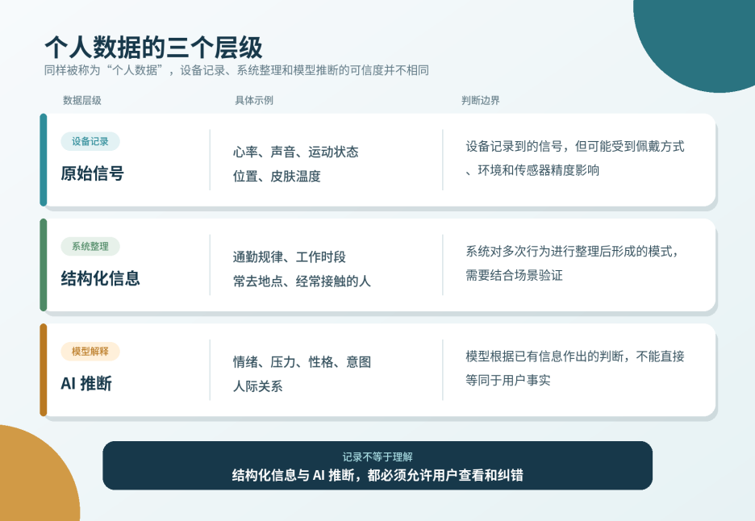
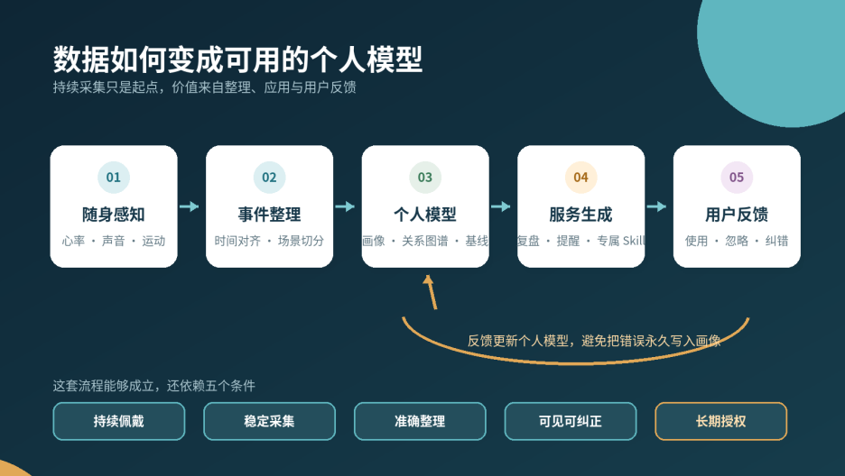
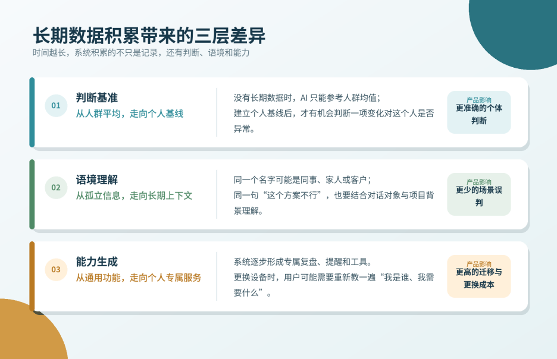

可穿戴AI的价值不在于硬件本身，而在于持续积累的个人模型。一块“塞了AI的儿童手表”在佩戴一周后开始理解用户，这背后是数据采集、多模态融合与个人画像的完整链路。本文拆解云玦的技术方案，探讨从数据到理解的鸿沟，以及为何这类产品越用越值钱、越难更换。

硬件是入口，数据是原料，能被纠正并持续更新的个人模型才是资产。
可穿戴设备正在成为个人AI 的持续感知入口
最近，我看到差评硬件部分享了一段可穿戴AI 的内测体验。
体验者拿到的是一块“塞了 AI 的儿童手表”。刚开始使用时，它并不惊艳，甚至难用到让人想把它扔掉。但持续佩戴一周后，情况发生了变化：系统开始知道他的性格、通勤时间、听歌偏好、正在忙的项目和第二天的安排，也逐渐分辨出家人和同事，甚至主动给他寻找选题，发现了一件他自己都没有意识到的事情。
这段体验最值得关注的，是同一块硬件在不同时间呈现出了完全不同的价值。
传统智能硬件的价值通常在开箱时最直观：屏幕多大、续航多久、传感器有多少，买到手基本就能判断。但这块手表恰恰相反。第一天，它对用户几乎一无所知；一周以后，它才开始变得有用。
硬件没有发生变化，系统手里却逐渐积累了一套“关于这个人”的信息。
当然，这只是一次内测体验，不能证明每个用户佩戴一周后都会获得同样的效果。云玦的自研硬件也尚未正式发布，目前仍处于主流程验证阶段。但它至少提供了一个值得AI 产品经理继续追问的问题：
当AI 被戴在身上以后，主要决定产品价值的，还是硬件本身吗？
01 这块手表在积累什么？
看到这段视频时，我最初也很自然地把性格、情绪、通勤、工作和人际关系都归进了“个人数据”。
但继续拆解后会发现，这些信息并不处于同一个层级。
根据云玦公布的技术方案，系统计划处理心率、心率变异性、运动状态、声音、视觉、对话内容和关系图谱等多种信息，并按照时间将它们放进同一条多模态时间线中。
其中有些是设备直接记录的信号，有些是系统整理出的规律，还有一些只是AI 根据前两者作出的推断。

这个区别很重要。
心率升高是一条信号，但“用户当时很紧张”已经是一项推断；两个人频繁出现在同一时间和地点是一种行为模式，但“他们关系亲密”仍然需要更多证据。AI 可以把这些线索联系起来，却不能因为自己的解释听起来合理，就把它写进用户画像并长期保留下来。
如果系统把一次偶然行为当成稳定习惯，把普通的心率波动解释成焦虑，再基于这个错误判断生成建议，那么使用时间越长，积累下来的未必是资产，也可能是一套越来越难纠正的误解。
因此，可穿戴设备收集的数据多不多，只是第一个问题。更关键的是：系统能否区分记录、整理和推断，用户能否看到并纠正这些判断，以及纠正后的结果能否影响下一次服务。
只有完成这一步，“它知道了很多关于我生活的信息”，才可能进一步变成“它真的开始理解我”。
02 手机也有很多数据，为什么还需要可穿戴设备？
如果只比较数据种类，手机并不贫瘠。
它知道我们去过哪里、搜索过什么、给谁发过消息，也保存着照片、通讯录、日程和大量应用行为。可穿戴设备并不是突然发现了一片手机从未踏足的数据荒地。两者的主要差异，在于数据以什么方式、什么频率出现。
手机里的很多信息，需要用户主动操作才能留下：打开地图、拍照、搜索、发消息、添加日程。它擅长记录一个个明确的动作，却不一定知道动作之间发生了什么。可穿戴设备贴近身体，能够更连续地获得心率、运动状态、声音和环境变化，再把这些信号放进同一条时间线上。
比如，手机可以记录“下午三点参加了一场会议”，手表则可能进一步记录这场会议前后心率和活动状态的变化。如果系统还能识别当时的对话与人物，它看到的就不再只是一个日程，而是一段带有身体反应和环境上下文的经历。
单次心率升高的意义有限，长期比较才能显示“今天的你”和“平时的你”有什么不同。
WHOOP 和 Oura 已经在健康穿戴领域验证了这种产品思路。它们不会仅凭一次体温、心率或睡眠结果下判断，而是先形成个人基线，再把当天数据与用户自己的长期状态比较。Oura 展示的皮肤温度就是相对个人长期平均值的变化，避免让用户只看到一个孤立的数值。
这也解释了为什么可穿戴AI 需要时间。第一天的数据只能告诉系统“今天发生了什么”；连续使用之后，它才有机会知道“这件事对你来说是否反常”。
所以，可穿戴设备相对手机的优势，并不只是多拿到几类传感器数据。它更接近一个持续存在的感知入口：手机知道你主动做了什么，可穿戴设备则试图补上你做这些事时所处的状态与场景。
03 从收集数据到理解用户，中间还隔着一条产品链
连续采集解决的是“看见”，还没有解决“理解”。
一天的心率曲线、环境声音和运动数据直接摆在用户面前，大概率只会变成一堆没人愿意细看的记录。数据要产生产品价值，至少要经历一条完整的加工链：

从随身感知到个人模型的数据流程
云玦把信号处理的第一步称为Early Fusion，也就是早期融合。
常见的多模态处理方式，是先把音频转成文字、把图片转成描述、把心率变成数值摘要，再把这些结果交给大模型。这种方式工程上更容易实现，但会损失部分时间关系和强度变化。云玦公布的方案试图在更早阶段对齐心率、声音、视觉、运动状态与对话，让系统知道某个身体变化发生在一句话之前还是之后。
这套技术方向的价值不难理解。对于“刚才说了什么”，文字转录已经够用；如果想回答“你在什么时候开始紧张”“同样一场会议为什么今天反应不同”，系统就需要更细的多模态时间关系。
不过，时间上先后发生仍然不等于因果关系。即便设备准确记录到心率在一句话后上升，也不能自动证明那句话造成了紧张。环境温度、走动、咖啡因，甚至传感器误差都可能影响结果。AI 更适合先提出一个解释，再让用户确认，不能替用户宣布“你当时就是这样想的”。
信号被整理成事件后，云玦公开的产品方案还会在每晚更新用户画像、个人知识图谱和关系图谱，寻找当前Skill 覆盖不到的需求，再生成新的工具和卡片。对于创作者，它可能长出灵感回放和写作复盘；对于职场用户，可能形成会议摘要、有效工作时长或协作关系整理。
这也是Zero-Skill 的含义：产品第一天不提供统一的功能清单，而会先观察一段时间，再依据个人数据逐渐生成不同的能力。
这条路的代价同样明显。首日Feed 可能是空的，早期体验不如成熟应用直接，系统还要承担长期推理、数据存储和错误纠正的成本。所谓“越用越懂你”，需要的不只是一句更长的提示词，还包括一整套持续运行的数据工程和产品机制。
严格来说，现阶段更适合把这些能力称为“个人模型”，而不是已经成熟的“个人世界模型”。云玦也把 Human-Centric World Model 放在长期目标中：当前产品首先要证明的，是这套从采集、理解到反馈的流程能否稳定运行。
04 为什么这类产品越用越值钱，也越难更换？
当一款产品形成了个人基线，它的价值就开始带上时间属性。
新用户和使用一年的用户，即使打开同一个应用，也不会得到完全相同的服务。后者已经积累了自己的作息变化、常见人物、项目背景、表达习惯和纠错记录。模型既可以参考“普通人在什么情况下可能疲劳”，也能继续判断“这个用户平时是什么状态，今天偏离了多少”。

近两年的行业变化，也让这层价值变得更明显。
Humane 的 AI Pin 消费硬件业务最终停止，HP 收购的重点包括其 AI 平台 Cosmos、技术团队和相关专利。随后，能够记录并整理现实对话的 Limitless 被 Meta 收购，新的硬件销售停止；把日常对话整理成摘要、提醒和个人记忆的 Bee 则加入了 Amazon。
这些交易不能直接证明大厂“就是为了用户数据”而收购。人才、专利、模型能力和硬件经验都可能是交易的一部分。但它们共同留下了一条线索：受到关注的除了吊坠、胸针或手环，还有其背后处理现实上下文、形成个人记忆的能力。
硬件形态可能变化，个人上下文却可以进入手表、眼镜、耳机、手机甚至未来的机器人。谁能把这些设备获得的零散信号整理成一套连续、可调用的个人模型，谁就更有机会占据个人AI 的长期入口。
这也是可穿戴AI 最可能形成切换成本的地方。相比一块可以重新购买的硬件，已经积累一段时间的“数字化自己”更难重新建立。
05 硬件仍然决定这条路能不能跑通
硬件未必是最终价值，却决定了数据能不能连续发生。如果设备太重、续航太短，用户每天摘下大半天，后面的个人模型再聪明，也只能面对一份不断缺页的生活记录。
因此，评估可穿戴AI 不能只看芯片、屏幕和传感器数量，也不能只看模型回答得多聪明。产品经理还要关注一组更贴近数据质量的指标：用户每天真实佩戴多久，有效采集覆盖了多少关键场景，充电后有多少人忘记戴回去，嘈杂环境下有多少事件被错误识别，以及设备的存在会不会让身边的人感到不适。
屏幕小甚至没有屏幕，也不一定是缺点。如果产品的角色是低打扰地感知，再把结果交给手机呈现，那么一块大屏幕反而可能增加功耗和操作负担。能否以更低的打扰留在用户身边，比复制手机的完整交互更重要。
云玦目前公开的产品状态也说明，它还没有把硬件形态当成已经完成的答案。公司现阶段使用Apple Watch 验证主流程，自研多模态硬件 v1 仍在进行中，并计划加入隐私指示灯、硬件关闭开关和本地缓存。视频中的儿童手表应当被理解为内测载体，不能当作已经准备量产的最终产品。
Humane AI Pin 则提供了另一种提醒：当云端服务关闭后，一块价格不低的 AI 硬件会迅速失去主要能力。用户购买的看似是一台设备，实际依赖的是硬件、云端模型、数据存储和持续服务共同组成的系统。
所以，“机会不在硬件”不能成为忽视硬件体验的理由。硬件的角色正在改变：它不必独立完成全部任务，需要负责让感知足够连续、自然、可靠，再把高质量的个人信号交给后面的系统。
06 谁有资格长期使用这些数据？
当设备能够持续听、看并测量身体状态，“数据资产”这个词也会立刻变得危险。
这里积累的内容远比普通点击记录敏感，其中包括一个人的行踪、健康状态、工作内容、私人对话和人际关系。它们越完整，对AI 越有价值；一旦被误用或泄露，对用户造成的影响也越大。
我国《个人信息保护法》已经将生物识别、医疗健康和行踪轨迹等列为敏感个人信息。处理这类信息需要特定目的和充分必要性，并采取严格保护措施；在相应情形下，还需要取得个人的单独同意。
但对于可穿戴AI，勾选一次隐私协议远远不够。
用户需要知道设备什么时候在采集，原始声音和画面是否会上云、保存多久、被谁调用；当AI 判断“你最近压力很大”或错误识别某段关系时，用户能否查看依据并直接纠正；撤回授权后，历史画像、关系图谱和系统生成的专属 Skill 又会怎样处理。
还有一个更棘手的问题：佩戴者同意设备持续收集，不代表出现在他身边的每个人都清楚自己正被记录。对于持续开启麦克风或摄像头的产品，明显的采集提示、快捷暂停、场景屏蔽和端侧处理会直接影响产品能否进入办公室、家庭和公共场所。
云玦公开资料称，深度内测阶段的原始数据目前在云端按设备加密和隔离处理；中期计划提供端侧或边侧方案，让原始数据留在设备，云端只接收融合后的向量，同时为高需求用户提供私有部署选项。这些仍属于公司披露的技术路线，距离普通用户能够使用和验证还有一段距离。
从产品角度看，隐私需要进入主流程，不能只留在设置页里：采集状态能不能被看见，授权能不能按数据类型拆分，模型判断能不能修改，数据能不能删除和导出，退出平台后个人模型能不能跟着用户离开。
如果这些问题没有答案，数据积累得越多，用户承担的风险就越大。可穿戴AI 需要争取的，是用户在长期使用中愿意不断续签的信任。
结语：模型可以属于平台，但生活首先属于用户
最初看到这段视频时，我把它理解成一块“越来越懂用户的 AI 手表”。继续研究之后，我反而觉得手表只是这个故事里最容易被看见的部分。
更深的变化是，AI 产品正在从等待用户输入，转向持续获得现实生活中的上下文。模型参数决定它具备多少通用能力，个人数据则决定这些能力能否落到一个具体的人身上。
不过，数据不会因为被采集下来就自动成为资产。它需要连续、准确、能够被用户纠正，还要在明确授权下转化成用户愿意使用的服务。硬件保证采集不会中断，产品机制把信号变成理解，信任决定用户是否愿意让它继续运转。
未来可穿戴AI 的竞争，除了比较模型能力和设备体验，还要看谁能在用户许可下，建立一套更完整、更准确，也更容易被用户掌控的个人模型。
最后还剩下一个很现实的问题：如果用户戴了三年，积累了自己的习惯、关系图谱和专属Skill，某一天想换一款设备，这套“数字化的自己”应该留在原平台，还是跟着用户一起离开？
这个问题的答案，或许才会决定所谓的数据资产，最后属于谁。